Sans JavaScript, tous les onglets restent visibles à la suite.
Itinéraires et destinations
La spirale de Gorse
Pour tous les supports · Pour tous les niveaux · Méthodologie et pédagogie
Une méthode de lecture et de réflexion, en une seule leçon, qui se resserre de ce qui saute aux yeux jusqu’au sens que l’élève construit lui-même.
On gravit un texte comme on gravit une pente : chaque tour est une prise plus haute. On part de ce qui saute aux yeux, puis l’attention se resserre, jusqu’à la pointe, le sommet où l’essentiel se laisse voir.
L’œuvre de couverture
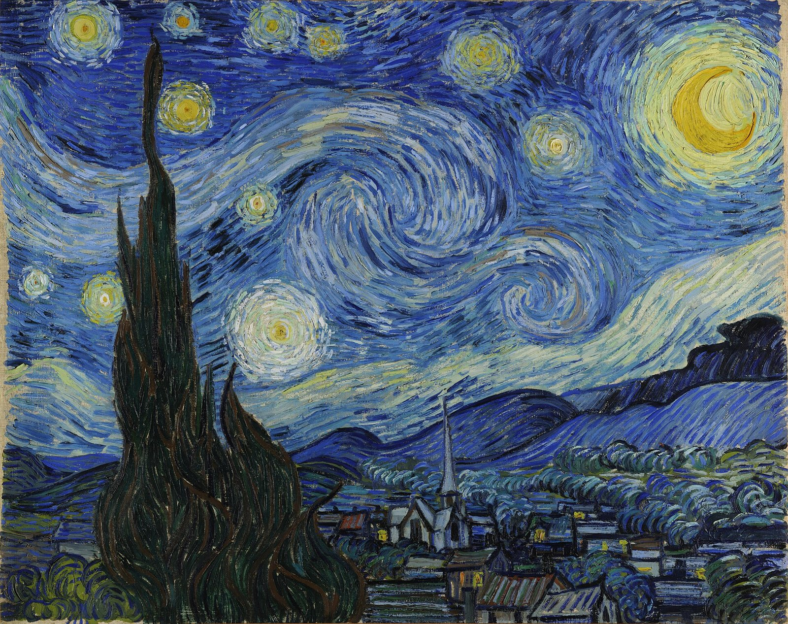
Van Gogh peint ce ciel en juin 1889, depuis sa fenêtre de Saint-Rémy-de-Provence. Le regard entre par ce qui saute aux yeux, le grand tourbillon au centre, puis il se resserre, boucle après boucle, jusqu’au clocher du village. C’est le geste même de la spirale : partir de ce que l’on voit, puis s’enfoncer, prise après prise, vers ce qui est moins visible.
La spirale de Gorse est née en classe. Madame Carole Paoli Pompougnac l’a conçue seule, avec ses élèves, pour qu’aucun d’entre eux ne reste à la porte d’un texte. Le nom rend hommage à sa grand-mère par alliance, Madame Armandine Gorse. Cette page montre ce que la méthode apporte à tout professeur, puis la met en œuvre sur neuf supports différents : un texte, un poème, une photo d’aliment, une photographie de travail, une vidéo, une chanson, un outil de métier, un document professionnel et un texte en anglais.
Neuf spirales modèles, chacune avec ses questions de professeur. Une leçon de 55 minutes, minutée sur 52 minutes. Une fiche récapitulative à imprimer, en PDF, Word et LibreOffice.
Méthode de la spirale conçue par Madame Carole Paoli Pompougnac
Les neuf supports
Les exemples en français sont en bordeaux, l’exemple en anglais en bleu marine.
- « C’était une de ces jolies et charmantes filles… »Support 1Texte littéraire
- « Demain, dès l’aube… »Support 2Poème
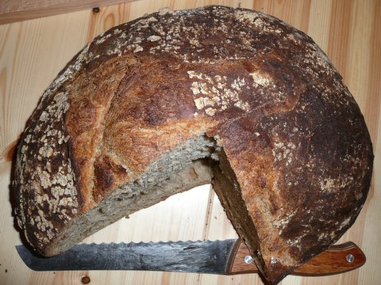
Support 3Photo d’un aliment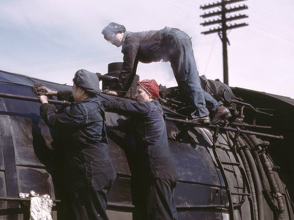
Support 4Photographie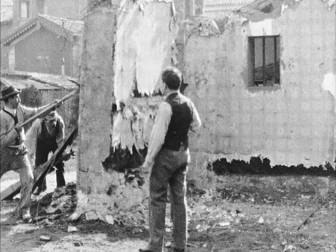
Support 5Vidéo- « Quand nous chanterons le temps des cerises »Support 6Audio et chanson
- Un arrosoir passe de main en mainSupport 7Objet de métier
- Un bon de commande, et une erreurSupport 8Document professionnel
- “NOW, what I want is, Facts.”Support 9Texte en anglais
Méthode de la spirale conçue par Madame Carole Paoli Pompougnac
© 2026 Madame Carole Paoli Pompougnac · CC BY-NC-SA 4.0
Pourquoi la spirale de Gorse intéresse tous les professeurs
Quelle que soit votre discipline, quel que soit le niveau de vos élèves, la spirale répond à une même difficulté : faire entrer chacun dans un support, puis l’amener à en trouver le sens par lui-même.
Chacun peut entrer
Le premier tour ne demande aucun savoir préalable : seulement de dire ce qui saute aux yeux, ou aux oreilles. L’élève qui lit mal, l’apprenti qui découvre le français, l’élève de SEGPA comme celui de Terminale ont tous quelque chose à dire. Personne ne reste à la porte du texte.
Chaque tour s’appuie sur le précédent
On ne saute pas d’étape : on remarque, puis on repère, puis on comprend. L’attention se resserre peu à peu, et l’élève voit lui-même le chemin parcouru. C’est ce qui protège du hors-sujet : on part de ce qui est sous les yeux, pas de ce que l’on croit savoir.
L’oral avant l’écrit
Les premiers tours se disent avant de s’écrire. La lecture à voix haute, l’écoute, la description à un camarade préparent l’écrit : ce qui saute aux oreilles prépare ce qui sautera aux yeux. L’écrit arrive quand l’idée a déjà été formulée.
Les élèves trouvent le sens eux-mêmes
Le professeur pose les questions ; il ne donne pas la réponse. À la pointe, l’élève formule un problème précis, ce qu’il peut défendre, et sa limite. Le sens n’est pas récité : il est construit, et l’élève peut le justifier, mot ou détail à l’appui.
Une aide pour les élèves dys et les élèves fragiles
Une seule étape à la fois, une seule question à la fois. La règle des deux bords, l’idée à l’extérieur et les appuis à l’intérieur, donne une place à chaque chose sur la feuille. La version courte en trois tours et la version dys en 18 points allègent la charge sans changer la méthode.
Tous les niveaux, tous les supports
SEGPA, CFA, lycée professionnel, lycée général et technologique, FLE : la spirale se resserre plus ou moins haut selon le niveau, mais les tours restent les mêmes. Elle vaut pour un texte, une image, un film, une chanson, un outil, un document de travail, en français, en anglais, et dans d’autres disciplines.
Une leçon de 55 minutes, minutée sur 52 minutes
Une spirale complète tient dans une leçon : un geste d’entrée, quatre tours, la pointe, la trace écrite. Si le temps manque, une sortie de secours est prévue. Le déroulé minuté se trouve dans l’onglet « En 52 minutes ».
Pourquoi la spirale protège du hors-sujet
Le hors-sujet vient presque toujours d’un élève qui récite ce qu’il croit savoir de l’œuvre au lieu de regarder ce qu’on lui donne. La spirale part, au contraire, de ce qui est sous les yeux : les mots du sujet, l’extrait, un détail.
Chaque tour s’appuie sur le précédent, jamais sur une connaissance plaquée. Même quand on connaît mal l’œuvre, on reste donc attaché à la question posée.
La spirale de Gorse n’est pas une prescription d’examen : c’est une méthode de travail, au service de la lecture et de la réflexion.
Méthode de la spirale conçue par Madame Carole Paoli Pompougnac
© 2026 Madame Carole Paoli Pompougnac · CC BY-NC-SA 4.0
Les cinq tours de la spirale
Quatre tours, puis la pointe. À l’extérieur, l’idée. À l’intérieur, les appuis.
1 Je remarque.
La première prise : ce qui saute aux yeux, la première impression.
2 Je repère.
Un tour plus haut : un détail, un passage, un élément plus net.
3 Je comprends.
Une prise plus ferme : ce que ces éléments me permettent de comprendre.
4 J’anticipe.
Je me fie à mon intuition pour percer le texte à jour et anticiper sa finalité.
5 Je trouve le sens.
La pointe, le sommet : le problème précis, l’essentiel que l’on peut défendre, et sa limite.
La règle des deux bords
Telle qu’elle est écrite pour l’élève, en le tutoyant, sur la page « Tomber amoureux de l’étude » :
À chaque tour, l’idée s’écrit à l’extérieur, et à l’intérieur ce qui la soutient. Si un élément résiste à ton idée, reviens en arrière et reformule. La première impression n’est pas forcément fausse : elle peut être précisée, limitée, parfois déplacée.
Ces mots s’adressent à l’élève ; ils sont cités tels quels.
Avant « Je remarque »
Deux gestes selon le support. Ils préparent le premier tour, ils ne le remplacent pas.
- Quand c’est un texte. On le lit une première fois à voix haute. Ce qui saute aux oreilles prépare ce qui sautera aux yeux.
- Quand c’est un cours. Avant l’écoute : ce que je sais déjà, mes questions. Puis « Je remarque » ce qui saute aux yeux ou aux oreilles, pendant l’écoute.
Pour chaque support de cette page, l’onglet propose son propre geste d’entrée : un regard en silence pour une photo, une écoute les yeux fermés pour une chanson, un objet qui passe de main en main pour un outil.
Version courte, en trois tours
Pour le CAP, la SEGPA, ou une première approche : « Je remarque », « Je comprends », « J’anticipe », puis « Je trouve le sens ». La version longue reste la référence.
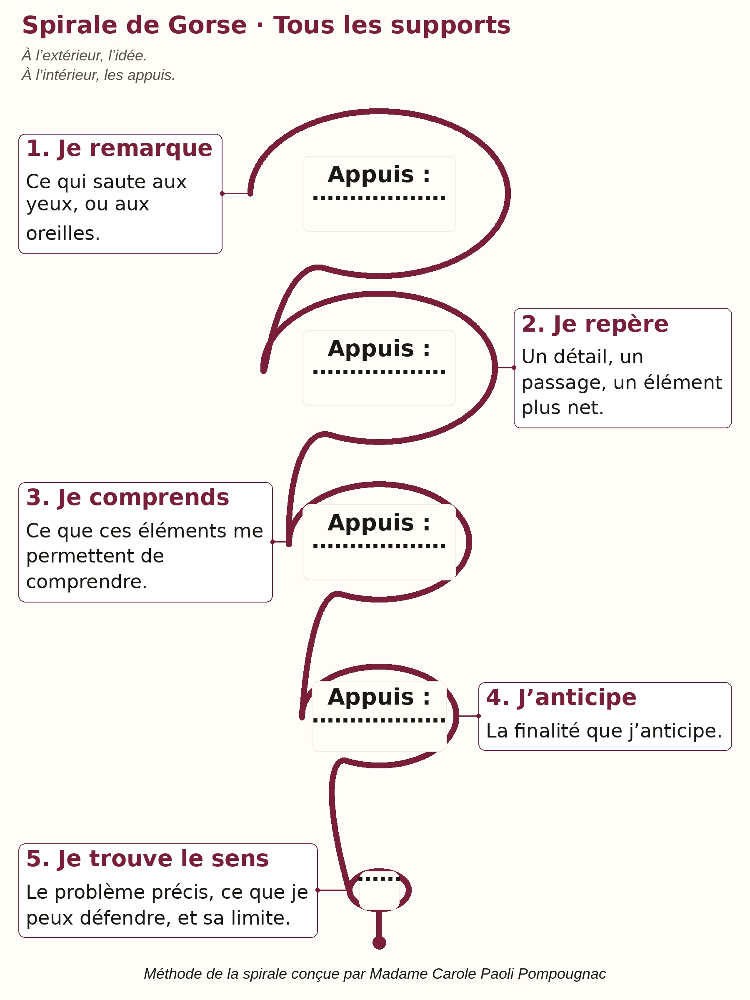
Méthode de la spirale conçue par Madame Carole Paoli Pompougnac
© 2026 Madame Carole Paoli Pompougnac · CC BY-NC-SA 4.0
Un texte littéraire : « La Parure », Guy de Maupassant
Pour : Lycée professionnel, lycée général et technologique ; 3e SEGPA et CAP en version courte.
Le support
C’était une de ces jolies et charmantes filles, nées, comme par une erreur du destin, dans une famille d’employés. Elle n’avait pas de dot, pas d’espérances, aucun moyen d’être connue, comprise, aimée, épousée par un homme riche et distingué ; et elle se laissa marier avec un petit commis du ministère de l’instruction publique.
Guy de Maupassant, « La Parure », Contes du jour et de la nuit, C. Marpon et E. Flammarion, 1885, p. 73. Texte du domaine public, d’après l’édition numérisée de Wikisource. Voir le texte source
Avant « Je remarque »
Le professeur lit le paragraphe à voix haute, puis un élève volontaire le relit. Ce qui saute aux oreilles prépare ce qui sautera aux yeux.
La spirale, tour après tour
1 Je remarque
Question du professeur : Qu’est-ce qui vous frappe d’abord chez cette jeune femme ?
À l’extérieur, l’idée : Elle est belle, mais quelque chose ne va pas.
À l’intérieur, les appuis : « jolies et charmantes » ; « une erreur du destin »
2 Je repère
Question du professeur : Quels mots disent ce qui lui manque ?
À l’extérieur, l’idée : Il lui manque tout pour changer de vie : l’argent et les relations.
À l’intérieur, les appuis : « pas de dot, pas d’espérances » ; la gradation « connue, comprise, aimée, épousée »
3 Je comprends
Question du professeur : Qui décide de son mariage ? Regardez le verbe.
À l’extérieur, l’idée : Elle subit son destin : on la marie à un homme modeste.
À l’intérieur, les appuis : « elle se laissa marier » ; « un petit commis »
4 J’anticipe
Question du professeur : D’après le titre, que va-t-elle chercher dans la suite du récit ?
À l’extérieur, l’idée : Elle voudra paraître ce qu’elle n’est pas ; le titre l’annonce.
À l’intérieur, les appuis : le titre « La Parure » ; « comme par une erreur du destin »
5 Je trouve le sens
Le problème précis : Dès la première phrase, comment Maupassant fait-il naître l’attente d’un drame ?
Ce que l’on peut défendre : L’héroïne se croit victime du destin et rêve d’une autre vie : le récit va mettre ce rêve à l’épreuve.
Sa limite : Nous ne connaissons pas encore la fin ; notre jugement sur le personnage reste à vérifier à la lecture.
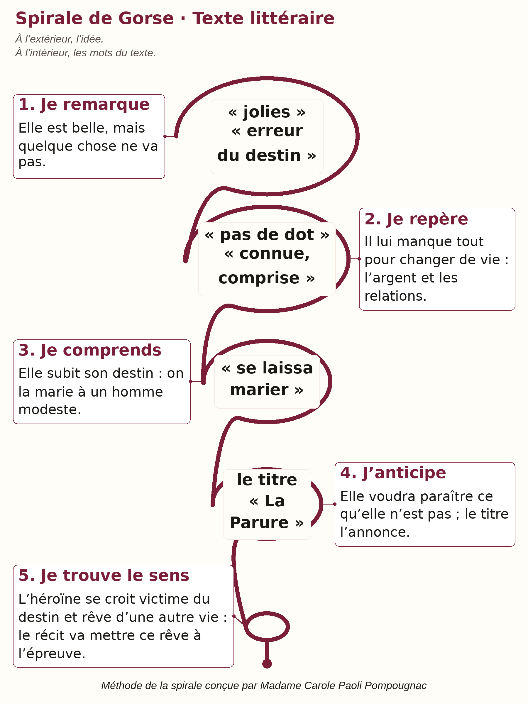
Version courte, en trois tours
Garder « Je remarque » (elle est belle et malheureuse), « Je comprends » (elle subit son mariage), « J’anticipe » (le titre), puis « Je trouve le sens » en une phrase.
Pour les élèves dys ou fragiles
Donner le paragraphe en 18 points, une phrase par ligne, et surligner à l’avance les deux citations du premier tour.
Méthode de la spirale conçue par Madame Carole Paoli Pompougnac
© 2026 Madame Carole Paoli Pompougnac · CC BY-NC-SA 4.0
Un poème : « Demain, dès l’aube… », Victor Hugo
Pour : Lycée professionnel, lycée général et technologique, 3e SEGPA ; FLE à partir du niveau B1.
Le support
- 1Demain, dès l’aube, à l’heure où blanchit la campagne,
- 2Je partirai. Vois-tu, je sais que tu m’attends.
- 3J’irai par la forêt, j’irai par la montagne.
- 4Je ne puis demeurer loin de toi plus longtemps.
- 5Je marcherai les yeux fixés sur mes pensées,
- 6Sans rien voir au dehors, sans entendre aucun bruit,
- 7Seul, inconnu, le dos courbé, les mains croisées,
- 8Triste, et le jour pour moi sera comme la nuit.
- 9Je ne regarderai ni l’or du soir qui tombe,
- 10Ni les voiles au loin descendant vers Harfleur,
- 11Et quand j’arriverai, je mettrai sur ta tombe
- 12Un bouquet de houx vert et de bruyère en fleur.
- 3 septembre 1847.
Victor Hugo, Les Contemplations, livre IV, poème XIV, 1856 ; texte de l’édition Nelson, 1911, p. 253. Texte du domaine public, d’après l’édition numérisée de Wikisource. Voir le texte source
Avant « Je remarque »
Deux lectures à voix haute. À la seconde, les élèves ferment les yeux et gardent un seul mot. Ce qui saute aux oreilles prépare ce qui sautera aux yeux.
La spirale, tour après tour
1 Je remarque
Question du professeur : De quoi parle ce poème, à la première lecture ?
À l’extérieur, l’idée : Un voyage à pied, décidé à l’avance, vers quelqu’un qui attend.
À l’intérieur, les appuis : v. 2 : « Je partirai » ; v. 3 : « J’irai par la forêt »
2 Je repère
Question du professeur : Que regarde le marcheur pendant sa route ?
À l’extérieur, l’idée : Il ne regarde rien autour de lui.
À l’intérieur, les appuis : v. 6 : « Sans rien voir au dehors » ; v. 9 et 10 : « ni l’or du soir », « Ni les voiles »
3 Je comprends
Question du professeur : Dans quel état est-il ? Cherchez les adjectifs.
À l’extérieur, l’idée : Il est seul et accablé de tristesse.
À l’intérieur, les appuis : v. 7 : « le dos courbé » ; v. 8 : « le jour pour moi sera comme la nuit »
4 J’anticipe
Question du professeur : Qui peut être ce « tu » qui l’attend ?
À l’extérieur, l’idée : Le rendez-vous n’est pas une rencontre ordinaire : la fin va tout éclairer.
À l’intérieur, les appuis : v. 2 : « je sais que tu m’attends » ; le futur de tout le poème
5 Je trouve le sens
Le problème précis : Comment un poème de rendez-vous devient-il un poème de deuil ?
Ce que l’on peut défendre : Le dernier vers révèle que la marche mène à une tombe : le tutoiement garde vivante la personne aimée.
Sa limite : Le nom de Léopoldine, la fille du poète, n’est pas dans le poème ; on le sait par la date, veille de l’anniversaire de sa mort, et par le recueil.
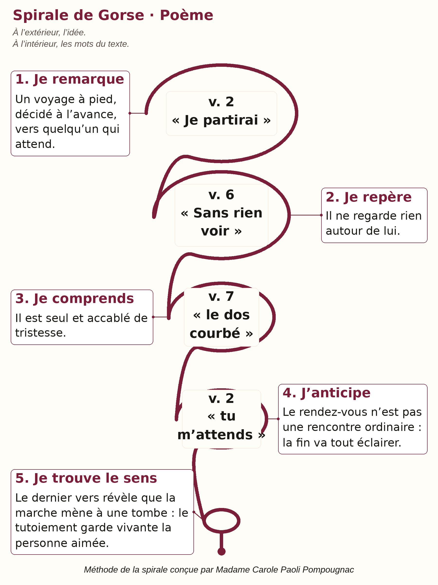
Version courte, en trois tours
Garder « Je remarque » (un départ), « Je comprends » (la tristesse), « J’anticipe » (qui attend ?), puis la chute : « ta tombe ».
Pour les élèves dys ou fragiles
Numéroter les vers, un vers par ligne, en 18 points ; faire entourer les verbes au futur avant le premier tour.
Méthode de la spirale conçue par Madame Carole Paoli Pompougnac
© 2026 Madame Carole Paoli Pompougnac · CC BY-NC-SA 4.0
Une photo d’un aliment : un morceau de pain
Pour : Tous niveaux : SEGPA (champ professionnel hygiène, alimentation, services), CFA (boulangerie, pâtisserie, cuisine), lycée professionnel, lycée général et technologique, FLE. Aucun savoir préalable n’est nécessaire.
Le support
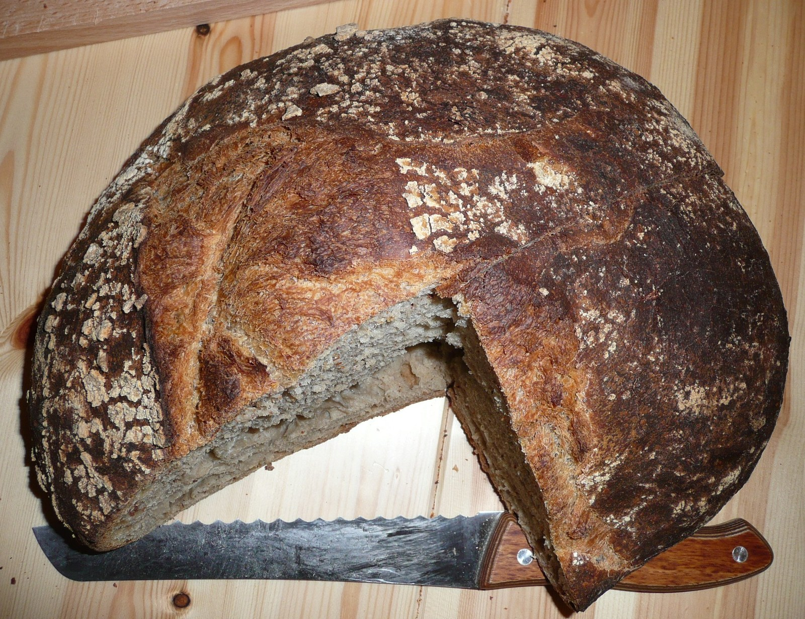
Avant « Je remarque »
Une minute de regard en silence. Si vous le pouvez, apportez aussi un vrai pain : on le sent, et l’on écoute la croûte craquer sous le couteau.
Prolongement en anglais, au deuxième tour : nommer chaque partie dans les deux langues.
- le pain : bread
- une miche : a loaf
- la croûte : the crust
- la mie : the crumb
- une tranche : a slice
- le couteau à pain : a bread knife
La spirale, tour après tour
1 Je remarque
Question du professeur : Qu’est-ce que vous voyez en premier ?
À l’extérieur, l’idée : Un gros pain rond, déjà entamé.
À l’intérieur, les appuis : la forme ronde, la part qui manque ; le couteau à pain posé devant
2 Je repère
Question du professeur : Regardez la croûte, puis l’intérieur : que voyez-vous ?
À l’extérieur, l’idée : Dehors, une croûte épaisse et dorée ; dedans, une mie serrée.
À l’intérieur, les appuis : la croûte brune, presque noire par endroits, poudrée de farine ; la mie beige, aux petits trous
3 Je comprends
Question du professeur : Comment ce pain a-t-il été fait ? Qu’est-ce qui le montre ?
À l’extérieur, l’idée : C’est un pain façonné et cuit avec soin : on voit le travail du boulanger.
À l’intérieur, les appuis : les entailles faites sur la pâte avant la cuisson ; la farine du façonnage, la croûte bien cuite
4 J’anticipe
Question du professeur : Pourquoi faire un pain si gros ? Pour qui ?
À l’extérieur, l’idée : Un pain de cette taille se partage : il nourrit une famille pendant plusieurs jours.
À l’intérieur, les appuis : environ 1,6 kg, qui se conserve huit jours ; la part déjà coupée, le couteau prêt pour la suivante
5 Je trouve le sens
Le problème précis : Que raconte une simple photo de pain ?
Ce que l’on peut défendre : Derrière ce pain, il y a un savoir-faire, celui du boulanger, et un geste de partage : on coupe une part pour la donner. Le pain nourrit et réunit.
Sa limite : La photo ne montre ni le boulanger ni ceux qui mangent : le travail et le partage, nous les déduisons de ce que nous voyons.
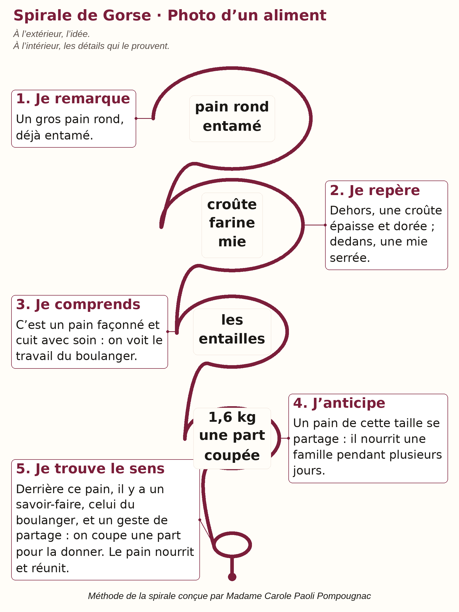
Version courte, en trois tours
Garder « Je remarque » (un pain rond, entamé), « Je comprends » (le travail du boulanger), « J’anticipe » (un pain qui se partage), puis le sens en une phrase.
Pour les élèves dys ou fragiles
Projeter la photo en grand et la donner sur papier ; montrer du doigt la croûte, puis la mie, avant de demander de les nommer.
Méthode de la spirale conçue par Madame Carole Paoli Pompougnac
© 2026 Madame Carole Paoli Pompougnac · CC BY-NC-SA 4.0
Une photographie : les nettoyeuses de locomotives, Jack Delano
Pour : SEGPA, CFA, lycée professionnel, lycée général et technologique ; utile en co-intervention avec l’enseignement professionnel.
Le support
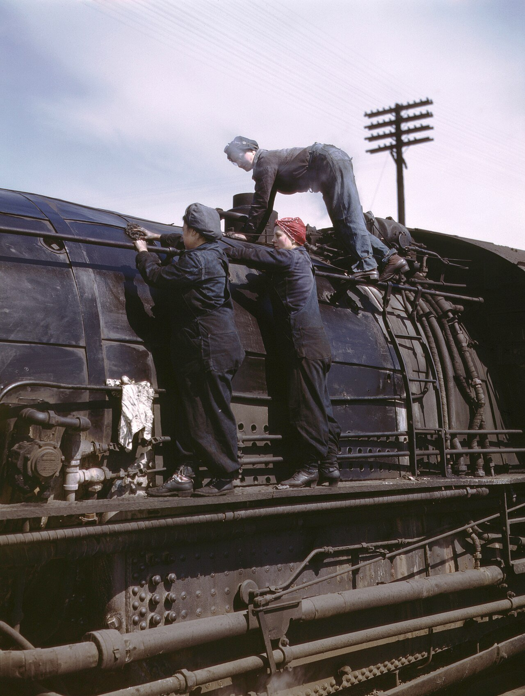
Avant « Je remarque »
Un élève décrit la photographie à un camarade qui ne la voit pas. Le camarade pose deux questions, puis découvre l’image.
La spirale, tour après tour
1 Je remarque
Question du professeur : Que voyez-vous d’abord ?
À l’extérieur, l’idée : Des personnes nettoient une énorme machine.
À l’intérieur, les appuis : la locomotive qui remplit l’image ; les chiffons
2 Je repère
Question du professeur : Qui sont ces travailleurs ? Regardez de près.
À l’extérieur, l’idée : Ce sont des femmes.
À l’intérieur, les appuis : le foulard rouge ; les silhouettes, les visages
3 Je comprends
Question du professeur : Pourquoi des femmes font-elles ce travail en 1943 ?
À l’extérieur, l’idée : Pendant la guerre, des femmes remplacent les hommes partis au front.
À l’intérieur, les appuis : la date : avril 1943 ; une commande de l’Office of War Information
4 J’anticipe
Question du professeur : D’où le photographe regarde-t-il ? Que veut-il faire ressentir ?
À l’extérieur, l’idée : Il se place plus bas qu’elles : elles se détachent sur le ciel, fortes et fières.
À l’intérieur, les appuis : le point de vue d’en bas ; la couleur, rare en 1943
5 Je trouve le sens
Le problème précis : Une photographie de travail montre-t-elle la réalité, ou la construit-elle ?
Ce que l’on peut défendre : Delano montre un vrai travail, mais il choisit l’angle, le cadre et la couleur pour une commande de l’État.
Sa limite : Nous ne savons pas ce que ces femmes pensaient de leur travail : la photographie ne leur donne pas la parole.
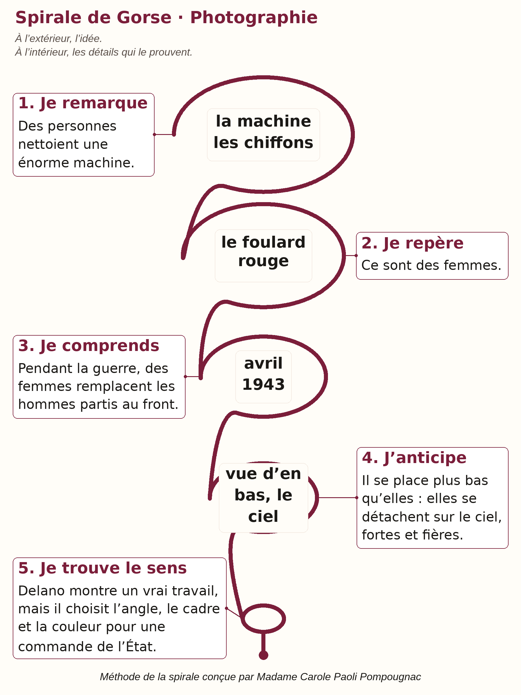
Version courte, en trois tours
Garder « Je remarque » (une machine, des personnes), « Je comprends » (des femmes en 1943), « J’anticipe » (le point de vue), puis le sens.
Pour les élèves dys ou fragiles
Agrandir un détail à la fois ; le premier tour peut se faire entièrement à l’oral.
Méthode de la spirale conçue par Madame Carole Paoli Pompougnac
© 2026 Madame Carole Paoli Pompougnac · CC BY-NC-SA 4.0
Une vidéo : Démolition d’un mur, Louis Lumière
Pour : Tous niveaux. La même spirale vaut pour une courte vidéo de métier, en français comme en anglais.
Le support
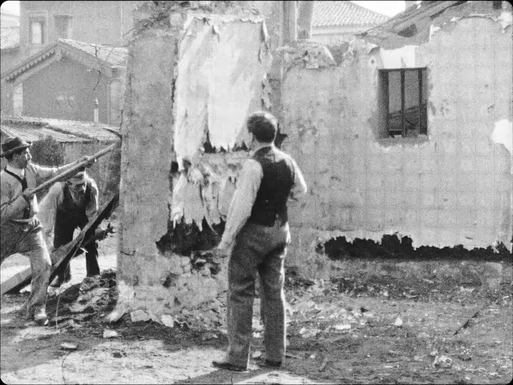
Voir le film sur Wikimedia Commons
Avant « Je remarque »
Premier visionnage sans consigne. Second visionnage : le professeur arrête l’image trois fois et demande seulement « Que voyez-vous ? ».
La spirale, tour après tour
1 Je remarque
Question du professeur : Que se passe-t-il ?
À l’extérieur, l’idée : Des ouvriers font tomber un vieux mur.
À l’intérieur, les appuis : le mur qui s’écroule ; le nuage de poussière
2 Je repère
Question du professeur : Qui fait quoi ? Observez les gestes.
À l’extérieur, l’idée : Chacun a un rôle : un homme dirige, les autres poussent puis frappent.
À l’intérieur, les appuis : l’homme en gilet qui donne les ordres ; les gestes répétés des ouvriers
3 Je comprends
Question du professeur : La caméra bouge-t-elle ? Combien y a-t-il de plans ?
À l’extérieur, l’idée : La caméra est fixe : nous regardons le chantier comme un passant.
À l’intérieur, les appuis : un seul plan ; moins d’une minute
4 J’anticipe
Question du professeur : Et si l’on passait le film à l’envers ?
À l’extérieur, l’idée : Le cinéma peut changer le temps : le mur se relève tout seul.
À l’intérieur, les appuis : la projection à l’envers, déjà pratiquée par les opérateurs Lumière ; la poussière qui revient vers le mur
5 Je trouve le sens
Le problème précis : Une vidéo montre-t-elle le réel, ou ce que la caméra et le montage en font ?
Ce que l’on peut défendre : Le film enregistre un vrai travail, mais le sens de la projection suffit à le transformer en spectacle.
Sa limite : C’est un film muet : dans une vidéo d’aujourd’hui, le son, la musique et le texte ajoutent d’autres pistes à lire.
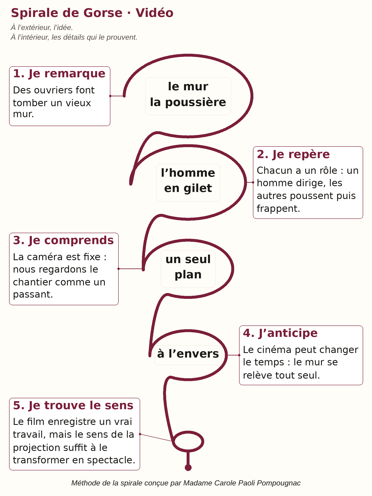
Version courte, en trois tours
Garder « Je remarque » (un mur tombe), « Je comprends » (une caméra fixe), « J’anticipe » (et à l’envers ?), puis le sens.
Pour les élèves dys ou fragiles
Visionner plusieurs fois, image arrêtée ; une seule question par visionnage.
Méthode de la spirale conçue par Madame Carole Paoli Pompougnac
© 2026 Madame Carole Paoli Pompougnac · CC BY-NC-SA 4.0
Un document audio, une chanson : « Le Temps des cerises », Jean-Baptiste Clément
Pour : Tous niveaux ; FLE à partir du niveau A2 pour les deux premiers tours.
Le support
- Quand nous chanterons le temps des cerises,
- Et gai rossignol, et merle moqueur
- Seront tous en fête !
- […]
- Mais il est bien court, le temps des cerises
- Où l’on s’en va deux, cueillir en rêvant
- Des pendants d’oreilles…
- […]
- J’aimerai toujours le temps des cerises :
- C’est de ce temps-là que je garde au cœur
- Une plaie ouverte !
Jean-Baptiste Clément, « Le Temps des cerises », 1866, musique d’Antoine Renard ; texte de La Chanson française du XVe au XXe siècle, éd. Jean Gillequin, La Renaissance du livre, 1910, p. 288. Texte du domaine public, d’après l’édition numérisée de Wikisource. Pour l’écoute, choisissez un enregistrement que vous avez le droit de diffuser en classe, ou chantez-la. Voir le texte source
Avant « Je remarque »
Une première écoute les yeux fermés, sans les paroles. Ce qui saute aux oreilles prépare ce qui sautera aux yeux. Les paroles ne sont données qu’à la deuxième écoute.
La spirale, tour après tour
1 Je remarque
Question du professeur : Quelle impression vous laisse la musique ?
À l’extérieur, l’idée : Une chanson douce, un peu triste.
À l’intérieur, les appuis : la mélodie lente ; le refrain qui revient
2 Je repère
Question du professeur : Quels mots reviennent à chaque couplet ?
À l’extérieur, l’idée : Le temps des cerises revient toujours, mais la phrase change.
À l’intérieur, les appuis : « Quand nous chanterons » ; « Mais il est bien court », « J’aimerai toujours »
3 Je comprends
Question du professeur : Que deviennent les cerises au fil des couplets ?
À l’extérieur, l’idée : La joie du printemps se change en blessure.
À l’intérieur, les appuis : « en gouttes de sang » ; « Une plaie ouverte »
4 J’anticipe
Question du professeur : Pourquoi une chanson d’amour a-t-elle été chantée bien au-delà de l’amour ?
À l’extérieur, l’idée : La chanson peut dire toute espérance perdue.
À l’intérieur, les appuis : la dédicace de 1882 à Louise, ambulancière de la Commune ; un refrain facile à reprendre ensemble
5 Je trouve le sens
Le problème précis : Comment une chanson d’amour devient-elle une chanson de mémoire commune ?
Ce que l’on peut défendre : Le refrain simple et l’image de la « plaie ouverte » permettent à chacun d’y mettre sa propre perte.
Sa limite : Écrit en 1866, le texte ne parle pas de la Commune de 1871 : ce sens lui est venu après, par l’histoire et par son auteur.
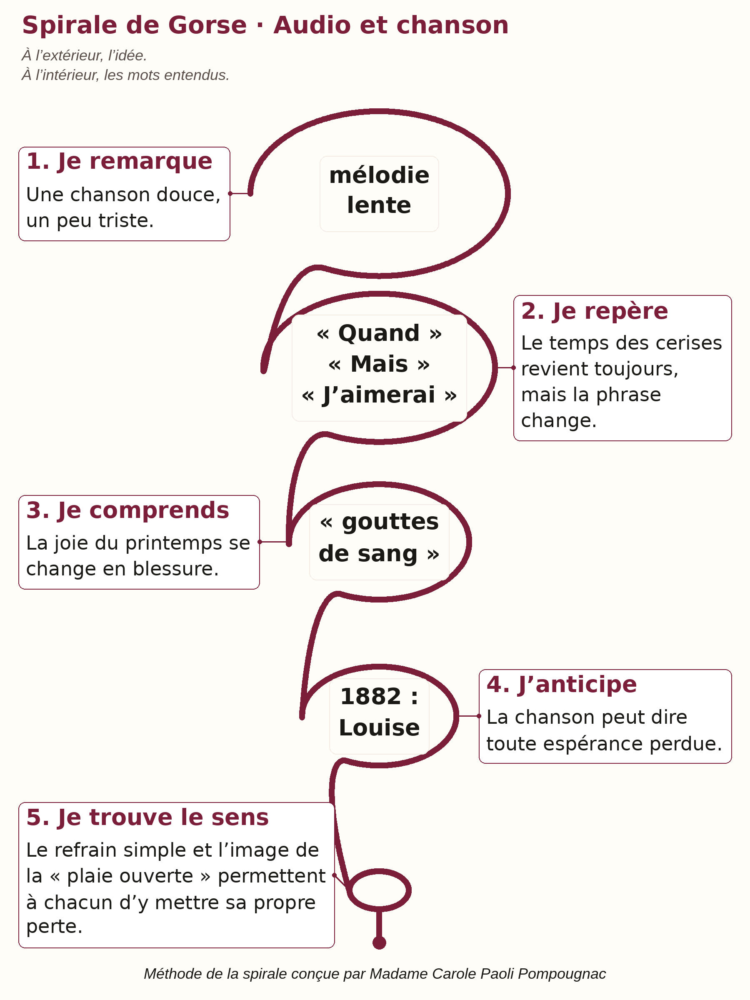
Version courte, en trois tours
Garder « Je remarque » (une chanson douce), « Je comprends » (la joie devient blessure), « J’anticipe » (pourquoi la chante-t-on encore ?), puis le sens.
Pour les élèves dys ou fragiles
Donner les paroles en 18 points après la première écoute ; faire lever la main à chaque retour du refrain.
Méthode de la spirale conçue par Madame Carole Paoli Pompougnac
© 2026 Madame Carole Paoli Pompougnac · CC BY-NC-SA 4.0
Un objet ou un outil de métier : l’arrosoir du jardinier
Pour : SEGPA (champ professionnel espace rural et environnement), CFA (CAP jardinier paysagiste, horticulture), lycée professionnel. Le même déroulé vaut pour une truelle, un fouet de pâtissier, une clé dynamométrique ou un peigne de coiffure.
Le support
Le support est l’objet lui-même, apporté en classe : un arrosoir de jardinier de 10 litres, avec sa pomme amovible. À défaut, une photographie de l’objet et de chacune de ses parties.
Support réel : un objet de l’atelier, que les élèves peuvent toucher.
Avant « Je remarque »
L’objet passe de main en main, en silence. Chacun le soupèse et le touche avant d’en parler.
Prolongement en anglais, au deuxième tour : nommer chaque partie dans les deux langues.
- un arrosoir : a watering can
- le réservoir : the tank
- l’anse : the handle
- le goulot : the spout
- la pomme : the rose
La spirale, tour après tour
1 Je remarque
Question du professeur : Qu’est-ce que c’est ? À quoi sert-il ?
À l’extérieur, l’idée : Un arrosoir : il sert à arroser les plantes.
À l’intérieur, les appuis : la forme du réservoir ; le poids, une fois plein
2 Je repère
Question du professeur : Nommez chaque partie, et montrez-la.
À l’extérieur, l’idée : Chaque partie a un nom et un rôle.
À l’intérieur, les appuis : le réservoir, l’anse, le goulot ; la pomme, percée de petits trous
3 Je comprends
Question du professeur : Pourquoi met-on une pomme au bout du goulot ?
À l’extérieur, l’idée : La pomme change le jet en pluie fine : elle n’abîme pas les jeunes plants et ne tasse pas la terre.
À l’intérieur, les appuis : l’essai avec et sans la pomme ; la terre creusée par le jet
4 J’anticipe
Question du professeur : Quand choisiriez-vous un autre outil ?
À l’extérieur, l’idée : L’outil dépend de la tâche : pour une grande surface, on prend le tuyau ou l’arrosage automatique.
À l’intérieur, les appuis : 10 litres, c’est 10 kilos à porter ; la surface à arroser
5 Je trouve le sens
Le problème précis : Qu’est-ce qu’un bon outil pour un professionnel ?
Ce que l’on peut défendre : Un outil se comprend par sa forme, son usage et le geste qu’il demande ; le nommer avec précision, c’est déjà parler en professionnel.
Sa limite : On ne connaît vraiment un outil qu’en s’en servant, à l’atelier ou en entreprise ; la spirale prépare le geste, elle ne le remplace pas.
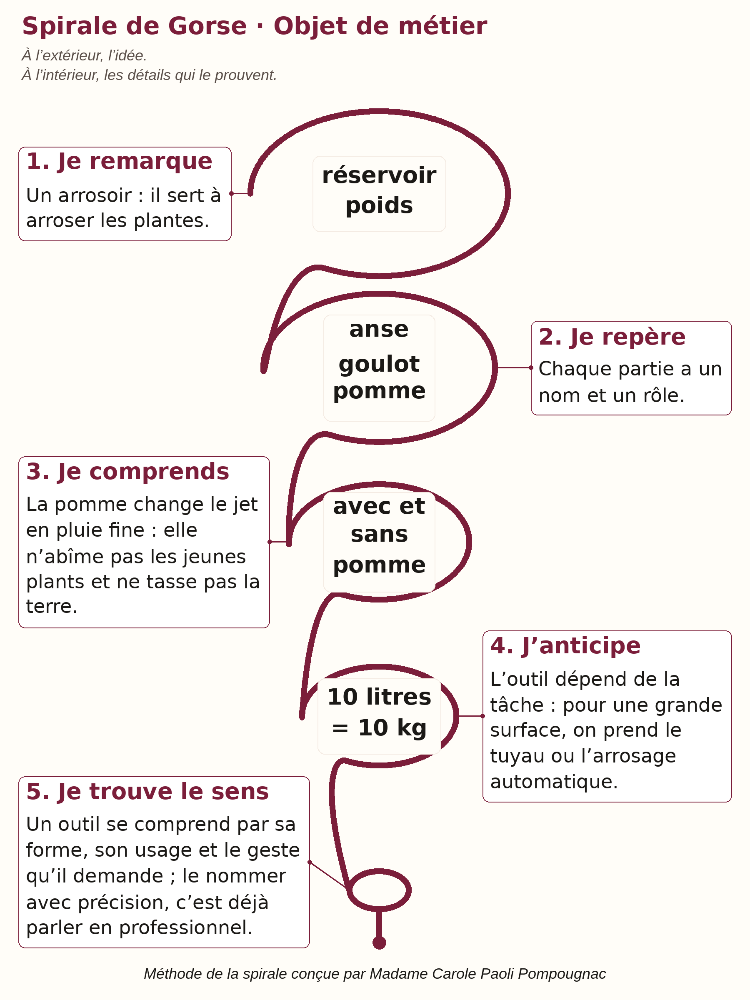
Version courte, en trois tours
Garder « Je remarque » (un arrosoir), « Je comprends » (la pomme), « J’anticipe » (quel outil pour quelle tâche ?), puis le sens en une phrase.
Pour les élèves dys ou fragiles
Étiquettes à poser sur l’objet ou sur sa photographie ; un mot par étiquette, en gros caractères.
Méthode de la spirale conçue par Madame Carole Paoli Pompougnac
© 2026 Madame Carole Paoli Pompougnac · CC BY-NC-SA 4.0
Un document professionnel : un bon de commande
Pour : SEGPA (champ vente, distribution, magasinage), CFA, lycée professionnel. Le même déroulé vaut pour une fiche technique, une fiche de poste ou un bon de livraison.
Le support
Bon de commande
Bon de commande n° 2026-114
Date : 9 novembre 2026
Client : lycée professionnel des Tilleuls, atelier espaces verts (adresse fictive)
Fournisseur : Jardinerie du Val (adresse fictive)
| Désignation | Quantité | Prix unitaire HT (euros) | Montant HT (euros) |
|---|---|---|---|
| Arrosoir 10 litres, avec pomme | 4 | 12,50 | 50,00 |
| Brouette 100 litres | 2 | 89,00 | 187,00 |
| Sécateur de jardinier | 6 | 18,90 | 113,40 |
| Total HT | 350,40 | ||
| TVA 20 % | 70,08 | ||
| Total TTC | 420,48 | ||
Livraison souhaitée : 20 novembre 2026
Signature et cachet de l’établissement
Document fictif, créé pour cette page. Une erreur y est volontairement glissée.
Avant « Je remarque »
Trente secondes pour parcourir le document des yeux, sans lire en détail : le titre, les blocs, le tableau, la signature.
La spirale, tour après tour
1 Je remarque
Question du professeur : Quel est ce document ? Qui l’envoie, à qui ?
À l’extérieur, l’idée : Un bon de commande d’un lycée à une jardinerie.
À l’intérieur, les appuis : le titre « Bon de commande » ; les deux adresses, le numéro
2 Je repère
Question du professeur : Que commande-t-on ? En quelle quantité, à quel prix ?
À l’extérieur, l’idée : Trois outils, en plusieurs exemplaires.
À l’intérieur, les appuis : les colonnes du tableau ; quantité x prix unitaire
3 Je comprends
Question du professeur : Les montants sont-ils justes ? Refaites le calcul.
À l’extérieur, l’idée : Il y a une erreur sur la ligne des brouettes.
À l’intérieur, les appuis : 2 x 89,00 = 178,00, et non 187,00 ; le total hors taxes faux de 9,00 euros
4 J’anticipe
Question du professeur : Que se passera-t-il si personne ne voit l’erreur ?
À l’extérieur, l’idée : Le client paiera trop, ou la facture sera contestée : il faut prévenir le fournisseur.
À l’intérieur, les appuis : le total TTC ; la date de livraison et la signature
5 Je trouve le sens
Le problème précis : À quoi sert la lecture attentive d’un document professionnel ?
Ce que l’on peut défendre : Un document professionnel engage ceux qui le signent : le lire ligne à ligne protège l’entreprise et le client.
Sa limite : Il faut aussi connaître des règles que le document ne dit pas : la TVA, les délais, les conditions de paiement.
Prolongement à l’écrit : rédiger le courriel au fournisseur qui signale l’erreur et demande un bon corrigé.
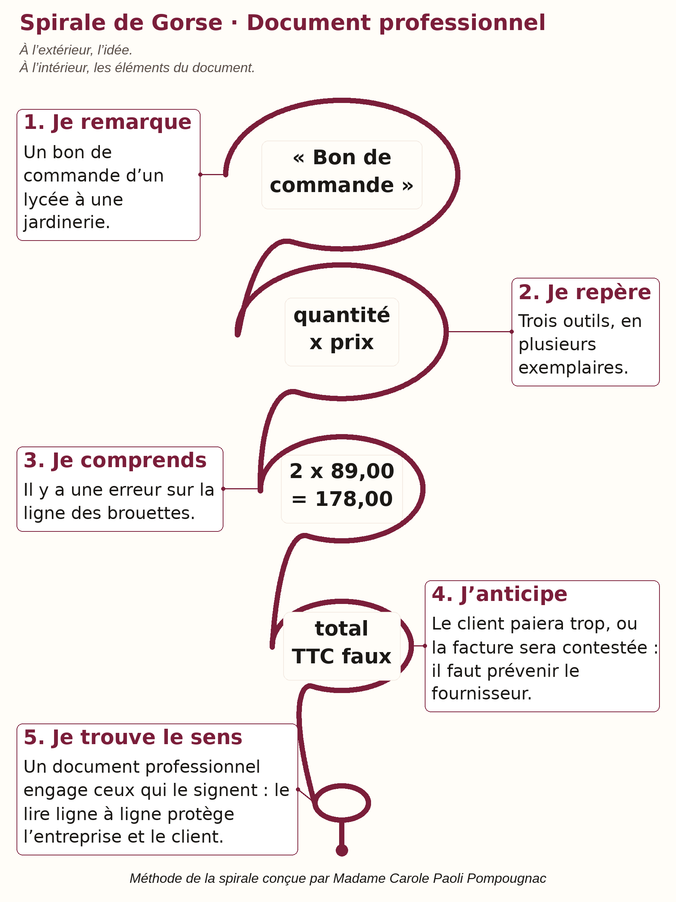
Version courte, en trois tours
Garder « Je remarque » (un bon de commande), « Je comprends » (l’erreur), « J’anticipe » (que faire ?), puis le sens.
Pour les élèves dys ou fragiles
Donner le tableau ligne par ligne, une règle de lecture à la main ; autoriser la calculatrice.
Méthode de la spirale conçue par Madame Carole Paoli Pompougnac
© 2026 Madame Carole Paoli Pompougnac · CC BY-NC-SA 4.0
Un texte en anglais : Hard Times, Charles Dickens
Pour : Lycée professionnel (B1), lycée général et technologique (LVA, LVB). Pour la SEGPA et le CFA, on garde les deux premiers tours et la version courte.
Le support
“NOW, what I want is, Facts. Teach these boys and girls nothing but Facts. Facts alone are wanted in life. Plant nothing else, and root out everything else. You can only form the minds of reasoning animals upon Facts: nothing else will ever be of any service to them. This is the principle on which I bring up my own children, and this is the principle on which I bring up these children. Stick to Facts, sir!”
The scene was a plain, bare, monotonous vault of a school-room, and the speaker’s square forefinger emphasized his observations by underscoring every sentence with a line on the schoolmaster’s sleeve. […]
The speaker, and the schoolmaster, and the third grown person present, all backed a little, and swept with their eyes the inclined plane of little vessels then and there arranged in order, ready to have imperial gallons of facts poured into them until they were full to the brim.
Charles Dickens, Hard Times, 1854, Book the First, Chapter I, « The One Thing Needful ». Texte du domaine public, d’après l’édition numérisée de Wikisource en anglais. Extrait. Voir le texte source
Avant « Je remarque »
Le professeur lit l’extrait à voix haute, en anglais. Les élèves notent le mot qu’ils entendent le plus souvent. Ce qui saute aux oreilles prépare ce qui sautera aux yeux.
La spirale, tour après tour
1 Je remarque
Question du professeur : What strikes you first? Who is speaking, and where?
À l’extérieur, l’idée : A man gives orders about how to teach children, in a school.
À l’intérieur, les appuis : « Teach these boys and girls » ; « a school-room »
2 Je repère
Question du professeur : Which word is repeated? How many times?
À l’extérieur, l’idée : The word “Facts” comes back again and again.
À l’intérieur, les appuis : « nothing but Facts », « Stick to Facts, sir! » ; six fois dans l’extrait
3 Je comprends
Question du professeur : How is the place described? What does it tell us?
À l’extérieur, l’idée : The school is as dry and empty as the speaker’s ideas.
À l’intérieur, les appuis : « plain, bare, monotonous » ; « square forefinger »
4 J’anticipe
Question du professeur : How does the narrator see the children?
À l’extérieur, l’idée : The children are seen as empty containers to be filled.
À l’intérieur, les appuis : « little vessels » ; « imperial gallons of facts »
5 Je trouve le sens
Le problème précis : Can a school teach nothing but facts?
Ce que l’on peut défendre : Dickens mocks a school that fills children with facts and forgets their imagination.
Sa limite : Facts are useful too: the text is a satire, it exaggerates on purpose.
Amorces de phrases, pour dire chaque tour à l’oral :
- This is about…
- I can see / I can hear…
- The word … is repeated, which shows…
- I think the writer wants to…
- In my opinion…, because…
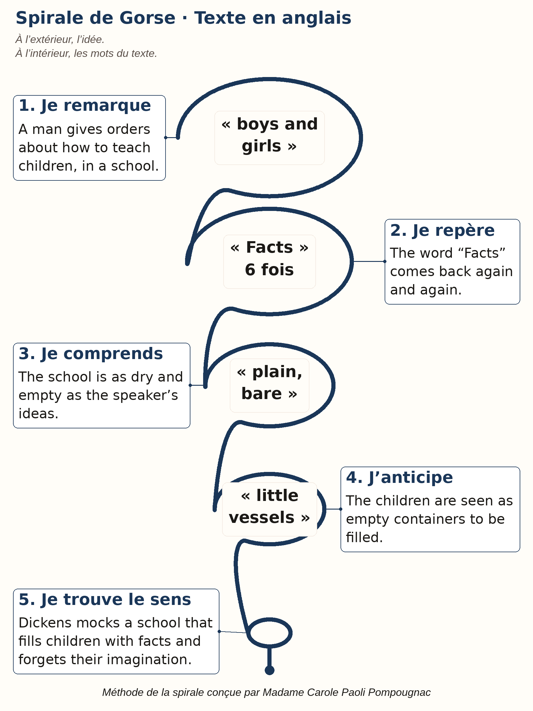
Version courte, en trois tours
Garder « Je remarque » (a man, a school), « Je comprends » (a dry school), « J’anticipe » (the children), puis le sens en une phrase, en français si besoin.
Pour les élèves dys ou fragiles
Donner l’extrait en 18 points, une phrase par ligne, avec le mot « Facts » en gras ; les amorces de phrases restent sous les yeux.
Méthode de la spirale conçue par Madame Carole Paoli Pompougnac
© 2026 Madame Carole Paoli Pompougnac · CC BY-NC-SA 4.0
Une spirale dans une leçon de 55 minutes, minutée sur 52 minutes
Le même déroulé vaut pour les neuf supports. Seul le geste d’entrée change.
| Minutes | Moment et activités |
|---|---|
| 0 à 5 | Avant « Je remarque » Le geste propre au support : lecture à voix haute, écoute les yeux fermés, regard en silence, objet passé de main en main. CO, CE |
| 5 à 12 | Je remarque À l’oral, tour de table : ce qui saute aux yeux ou aux oreilles. Aucune impression n’est refusée ; le professeur note au tableau, côté extérieur. PO |
| 12 à 30 | Je repère, je comprends À deux, sur la fiche : chaque idée s’écrit à l’extérieur, ses appuis à l’intérieur. Le professeur passe et relance par une question, jamais par la réponse. CE, PI, PE |
| 30 à 40 | J’anticipe Mise en commun. Les binômes proposent la finalité ; si un élément résiste, on revient en arrière et on reformule. PO, PI |
| 40 à 47 | Je trouve le sens Chacun écrit le problème précis, ce qu’il peut défendre, et sa limite. Deux ou trois lectures à voix haute. PE, PO |
| 47 à 52 | Trace écrite et devoir La trace écrite se construit à partir des pointes des élèves. Pour la fois suivante : refaire une spirale courte sur un nouveau détail. PE |
CE : compréhension écrite. CO : compréhension orale. PE : production écrite. PO : production orale. PI : interaction orale.
Sortie de secours
Sortie de secours : si le temps manque, on garde « Je remarque », « Je repère » et « Je trouve le sens » ; « J’anticipe » passe dans le devoir. Les trois minutes de marge servent à l’installation et au rangement.
Méthode de la spirale conçue par Madame Carole Paoli Pompougnac
© 2026 Madame Carole Paoli Pompougnac · CC BY-NC-SA 4.0
Fiche récapitulative
La spirale de Gorse sur une page, à garder sous les yeux ou à imprimer.
Principe. On part de ce qui saute aux yeux, puis chaque tour s’enfonce vers ce qui est moins visible, jusqu’à « Je trouve le sens ». À l’extérieur, l’idée. À l’intérieur, les appuis.
| Tour | La question du professeur |
|---|---|
| 1. Je remarque | Qu’est-ce qui vous saute aux yeux, ou aux oreilles ? |
| 2. Je repère | Où le voyez-vous exactement ? Montrez le mot, le détail, le moment. |
| 3. Je comprends | Qu’est-ce que ces éléments vous permettent de comprendre ? |
| 4. J’anticipe | À votre avis, à quoi tout cela sert-il ? Où cela veut-il nous mener ? |
| 5. Je trouve le sens | Quel est le problème précis ? Que pouvez-vous défendre ? Quelle est la limite ? |
Le geste avant « Je remarque », selon le support
| Support | Le geste d’entrée |
|---|---|
| Texte littéraire | Le professeur lit le paragraphe à voix haute, puis un élève volontaire le relit. |
| Poème | Deux lectures à voix haute. |
| Photo d’un aliment | Une minute de regard en silence. |
| Photographie | Un élève décrit la photographie à un camarade qui ne la voit pas. |
| Vidéo | Premier visionnage sans consigne. |
| Audio et chanson | Une première écoute les yeux fermés, sans les paroles. |
| Objet de métier | L’objet passe de main en main, en silence. |
| Document professionnel | Trente secondes pour parcourir le document des yeux, sans lire en détail : le titre, les blocs, le tableau, la signature.. |
| Texte en anglais | Le professeur lit l’extrait à voix haute, en anglais. |
Version courte. « Je remarque », « Je comprends », « J’anticipe », puis « Je trouve le sens ».
Si un élément résiste. On revient en arrière et on reformule.
En 52 minutes. 0 à 5 : geste d’entrée ; 5 à 12 : je remarque ; 12 à 30 : je repère, je comprends ; 30 à 40 : j’anticipe ; 40 à 47 : je trouve le sens ; 47 à 52 : trace écrite et devoir.
PDFWord (docx)LibreOffice (odt)
Méthode de la spirale conçue par Madame Carole Paoli Pompougnac
© 2026 Madame Carole Paoli Pompougnac · CC BY-NC-SA 4.0
Fiches à télécharger
Tous les documents sont en gros caractères (16 points au moins), en PDF, Word et LibreOffice. Rien n’est groupé dans une archive.
Fiche récapitulative
La spirale de Gorse sur une page : les cinq tours, les questions du professeur, le geste d’entrée selon le support, le minutage.
Les neuf spirales modèles
Chaque support, ses tours, ses questions, la spirale remplie, la version courte et l’aide pour les élèves dys ou fragiles.
Pourquoi la spirale de Gorse
L’intérêt de la méthode pour tout professeur, à partager en équipe ou en formation.
La spirale vierge, version standard et version dys
À imprimer pour les élèves, pour tous les supports.
Méthode de la spirale conçue par Madame Carole Paoli Pompougnac
© 2026 Madame Carole Paoli Pompougnac · CC BY-NC-SA 4.0